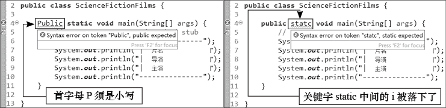

首页 > 编程笔记
Java关键字一览表
在 Java 语言中，关键字是指被赋予特定意义的一些单词，是 Java 程序重要的组成部分。
凡是在 Eclipse 中显示为红色粗体的单词，都是关键字。在编写代码时，既要正确区分关键字的大小写，又要避免关键字拼写错误。否则 Eclipse 将出现下图所示的错误提示。
Java 中的关键字及其说明如下表所示，其中带有
凡是在 Eclipse 中显示为红色粗体的单词，都是关键字。在编写代码时，既要正确区分关键字的大小写，又要避免关键字拼写错误。否则 Eclipse 将出现下图所示的错误提示。

图 1 关键字的拼写错误
图 1 关键字的拼写错误
Java 中的关键字及其说明如下表所示，其中带有
★标志的是 Java 程序中出现频率较高的关键字。| 关键字 | 说明 |
|---|---|
| abstract | 表明类或者成员方法具有抽象属性 |
| assert | 断言，用来进行程序调试 |
| boolean★ | 布尔类型 |
| break★ | 跳出语句，提前跳出一个代码块 |
| byte★ | 字节类型 |
| case | 用在 switch 语句之中，表示其中的一个分支 |
| catch | 用在异常处理中，用来捕捉异常 |
| char★ | 字符类型 |
| class★ | 用于声明类 |
| const | 保留关键字，没有具体含义 |
| continue★ | 回到一个代码块的开始处 |
| default | 默认，例如在 switch 语句中表示默认分支 |
| do | do-while 循环结构使用的关键字 |
| double★ | 双精度浮点类型 |
| else★ | 用在条件语句中，表示当条件不成立时的分支 |
| enum | 用于声明枚举 |
| extends | 用于创建继承关系 |
| final★ | 用于声明不可改变的最终属性，例如常量 |
| finally | 声明异常处理语句中始终会被执行的代码块 |
| float★ | 单精度浮点类型 |
| for★ | for循环语句关键字 |
| goto | 保留关键字，没有具体含义 |
| if★ | 条件判断语句关键字 |
| implements | 用于创建类与接口的实现关系 |
| import★ | 导入语句 |
| instanceof | 判断两个类的继承关系 |
| int★ | 整数类型 |
| interface | 用于声明接口 |
| long★ | 长整数类型 |
| native | 用来声明一个方法是由与计算机相关的语言（如 C、C++、Fortran 语言）实现的 |
| new★ | 用来创建新实例对象 |
| package★ | 包语句 |
| private | 私有权限修饰符 |
| protected | 受保护权限修饰符 |
| public★ | 公有权限修饰符 |
| return★ | 返回方法结果 |
| short★ | 短整数类型 |
| static★ | 静态修饰符 |
| strictfp | 用来声明 FP_strict（单精度或双精度浮点数）表达式遵循 IEEE 754-2008 算术规范 |
| super | 父类对象 |
| switch★ | 分支结构语句关键字 |
| synchronized | 线程同步关键字 |
| this | 本类对象 |
| throw | 抛出异常 |
| throws | 将异常处理抛向外部方法 |
| transient | 声明不用序列化的成员域 |
| try★ | 尝试监控可能抛出异常的代码块 |
| var | 声明局部变量 |
| void★ | 表明方法无返回值 |
| volatile | 表明两个或者多个变量必须同步地发生变化 |
| while★ | while 循环语句关键字 |
关注公众号「站长严长生」，在手机上阅读所有教程，随时随地都能学习。内含一款搜索神器，免费下载全网书籍和视频。

微信扫码关注公众号